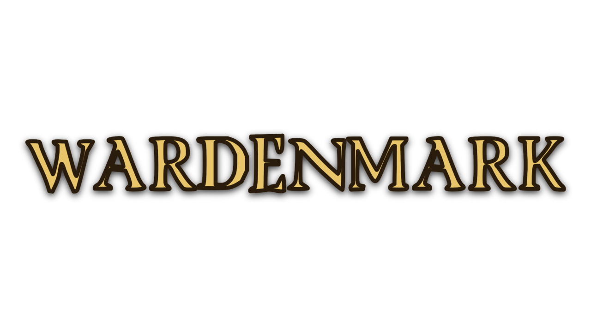

Wardenmark is a real-time survivors roguelite set in the world of Orenvalt. You lead a single Concord Warden — sworn to keep the peace the four crowns signed and never meant — into short, frantic arena missions along the contested border-marks. Your spells fire on their own; your job is to move, to read the field, and to choose what you become.
Cut down the swarm, gather the experience the fallen drop, and level. Build wide for omnidirectional coverage, or reserve picks to deepen one spell toward mastery. No two runs draft the same storm.
The Soldier's cleave, the Archer's volley, the Mage's homing bolt, the Trickster's chaining spark, the Engineer's auto-turret — each opens on a different signature.
Every level offers new auto-casting spells and passive upgrades. Build wide for coverage, or reserve picks to push one spell toward mastery.
Greenwood to stormpeak, each with its own faction swarm and telegraphed hazards. Every threat is readable — a death is a misplay you can learn from.
Missions chain into six-node expeditions — your build and your health persist node to node, so a run is a growing story, not a string of restarts.
Clear a twelve-stage campaign to unlock wardens and stage modifiers — then push into the unbounded Dread tail, with a boss every fifth node, as far as you can go.
A distinct faction warlord caps each tour. From your first kill to a level-60 legend and clearing the whole campaign with every warden.